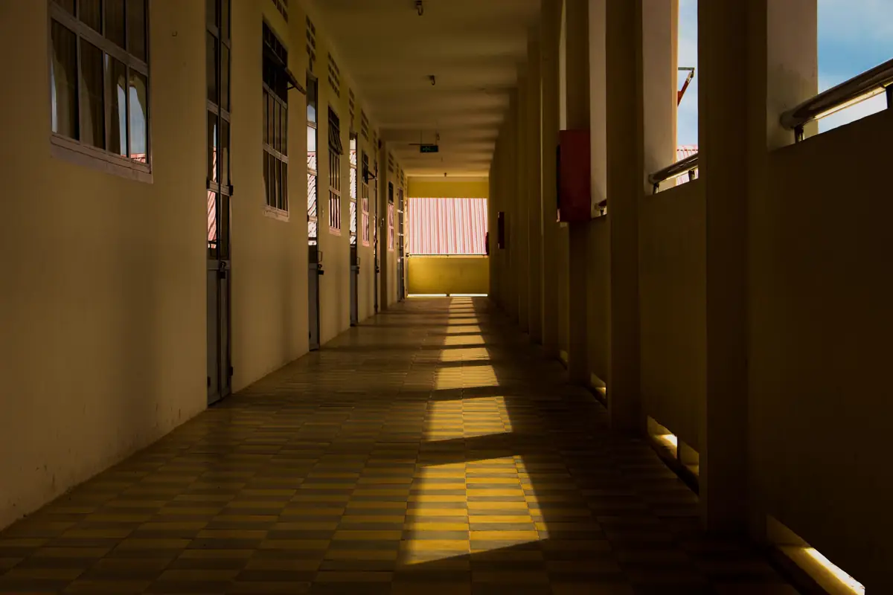
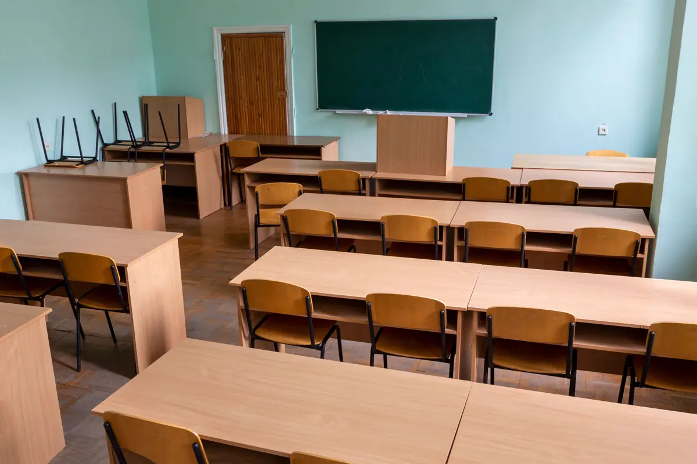

Por que a escola precisa estar acessível
A Lei Brasileira de Inclusão (Lei 13.146/2015) garante educação inclusiva em todos os níveis, e o Decreto 5.296/2004 já exigia que os estabelecimentos de ensino proporcionassem condições de acesso e uso de todos os seus ambientes. Na prática, a escola não escolhe: quando chega o aluno cadeirante, com baixa visão ou com mobilidade reduzida, a estrutura precisa responder — e a cobrança costuma vir da família, do conselho, da prefeitura ou do Ministério Público.
Esta página trata de instituições de ensino. Para lojas e escritórios, veja o laudo de acessibilidade para alvará; para a régua técnica completa, a página do laudo de acessibilidade NBR 9050.
Equipe técnica pronta para atender toda a demanda em Vitória, Vila Velha, Serra, Cariacica e região: o orçamento, o agendamento e o acompanhamento ficam centralizados na Axial Engenharia, do primeiro contato à entrega do documento.

Ambientes vistoriados
| Ambiente | O que é verificado |
|---|---|
| Entrada e portaria | Desnível da calçada, rampa, portão, balcão de atendimento rebaixado |
| Circulação | Largura de corredores, rampas, escadas com corrimão, piso tátil e elevador ou plataforma |
| Salas de aula e laboratórios | Porta com vão livre, espaço para cadeira de rodas, mesa com altura adequada |
| Sanitários | Sanitário acessível por pavimento, barras, lavatório e alarme |
| Refeitório e cantina | Balcão, rota entre as mesas, mesa acessível |
| Pátio, quadra e parque | Rota sem degrau, piso firme, arquibancada com espaço reservado, brinquedos |
| Biblioteca e auditório | Alcance de estantes, espaço para cadeira de rodas, sinalização |
Escola em funcionamento: adequar por etapas, sem parar as aulas
Escola raramente consegue fechar para obra. O laudo organiza as pendências por prioridade e por período: o que impede o acesso do aluno matriculado entra primeiro e pode ser feito no recesso; sinalização, ajustes de mobiliário e acessórios entram na sequência. Cada item sai com a solução técnica, para que a mantenedora cote a obra sobre o mesmo escopo.
Para escola particular, o laudo também é peça da renovação do alvará; para escola que recebeu ofício, o plano de adequação é a base da resposta ao Ministério Público.

O que a escola recebe
Laudo com fotos e medições de cada ambiente, lista de não conformidades com o item da NBR 9050, plano de adequação com prioridade e solução, e ART de acessibilidade do responsável técnico. Depois da obra, a vistoria de conferência fecha o processo.
Perguntas frequentes sobre acessibilidade em escolas
Escola particular é obrigada a ser acessível?
Sim. A Lei 13.146/2015 garante educação inclusiva em instituições públicas e privadas, e o Decreto 5.296/2004 exige que estabelecimentos de ensino de qualquer nível proporcionem condições de acesso e uso de todos os seus ambientes.
A escola pode recusar matrícula por falta de acessibilidade?
Não. A recusa de matrícula por motivo de deficiência é vedada pela legislação. Por isso o caminho é adequar a estrutura, começando pelos itens que impedem o acesso do aluno.
Escola antiga precisa ter elevador?
Precisa oferecer rota acessível aos ambientes usados pelos alunos. Elevador ou plataforma elevatória é uma das soluções; em alguns casos, remanejar a turma para o térreo e adequar a rota resolve no curto prazo. O laudo indica a solução viável.
Quanto tempo leva a vistoria de uma escola?
Uma escola de porte médio costuma ser vistoriada em um dia, fora do horário de aulas ou em período combinado. O laudo com o plano de adequação sai, em geral, entre sete e doze dias úteis.
O laudo serve para creche e faculdade?
Serve. O método é o mesmo; muda o peso de cada ambiente — fraldário e solário na creche, auditório, laboratórios e biblioteca na faculdade.
Acessibilidade em escolas da Grande Vitória
Laudo NBR 9050 para escolas, creches e faculdades:
Vai receber um aluno com deficiência?
Informe o número de pavimentos e o que já existe de rampa e elevador. Retornamos com escopo, prazo e valor.